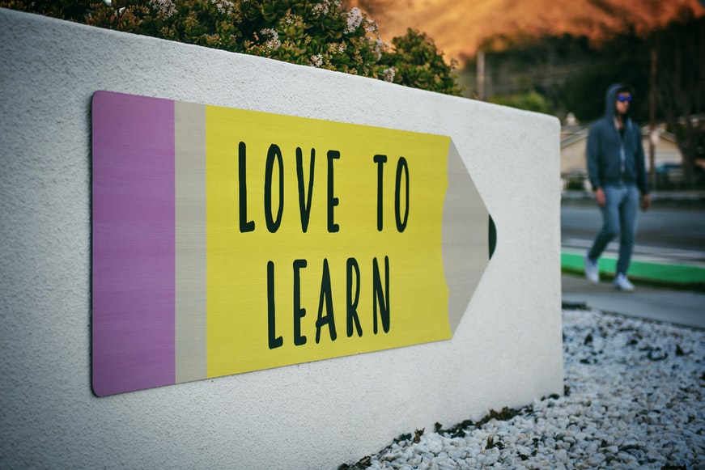

WHAT WAS THE PURPOSE OF AN EDUCATION SYSTEM?
Ofcourse , Education is the most important element when it comes to changing the current world we live in. Most of the innovations we human beings have collectively done together requires a good and world class education. Cause everyone knows the CEO of Google or Apple aint an uneducated donkey with money in his mind! So here is my question? shouldn't learning be made interesting? So that more and more passionate people can come in the industry! still confused , what I mean? Well it's simple grab any kid in your batch or classroom and ask him why is he studying things or why is he really coming to school! I think most of them are gonna say that they are studying because they want to impress their parents or something like I wanna get more than 90%. Some might say that for homeworks or may be they are pressurized by their schools or parents and yep thats it! But they key realization right in this case is that only few or may be none is gonna say that they are learning for the love of it , that they are learning Math or Physics or any subject because they are really curious about that thing in general. This will not happen cause schools never want you to love that. They kill , yes they kill your curiocity by giving you homeworks , tests , assignments , projects. In this atmosphere how can you expect a kid to explore and enjoy the process of learning!